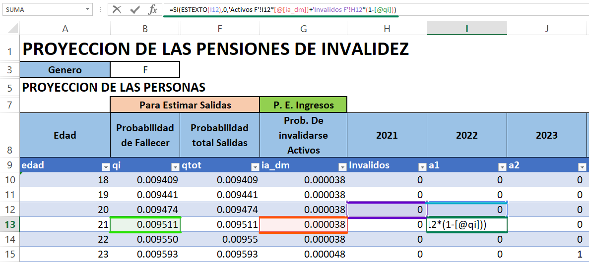
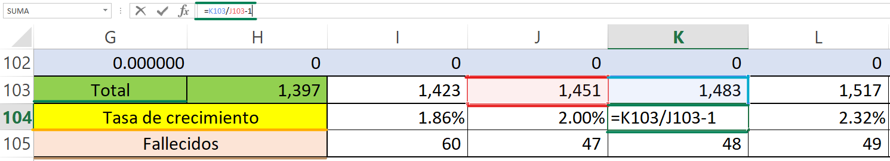
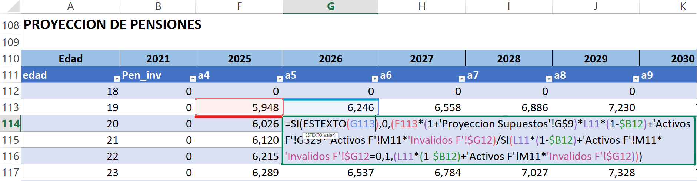
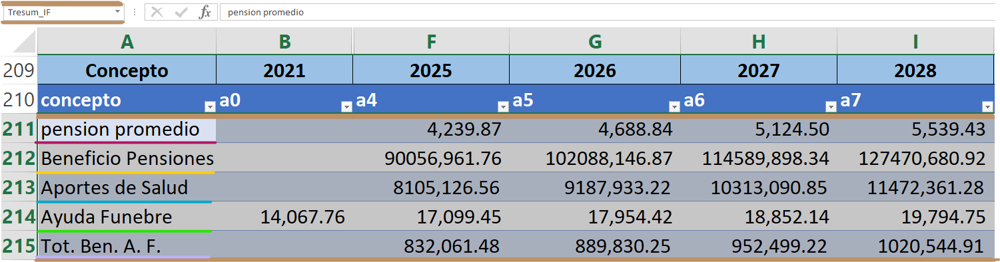
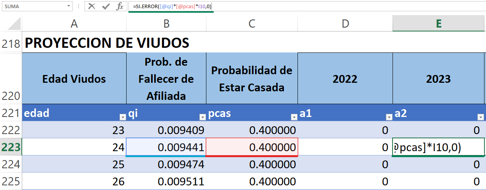
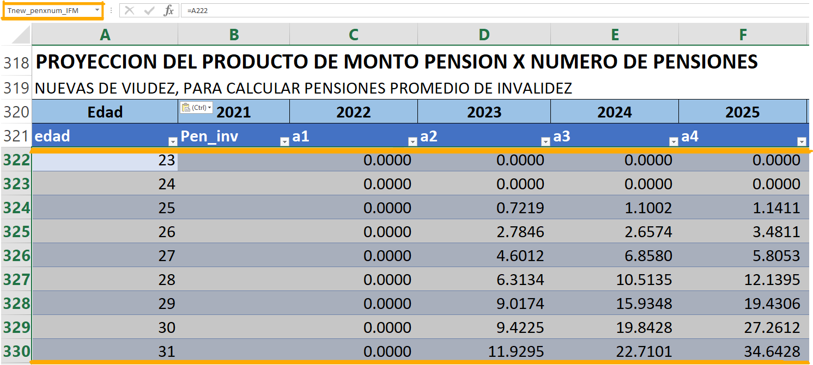
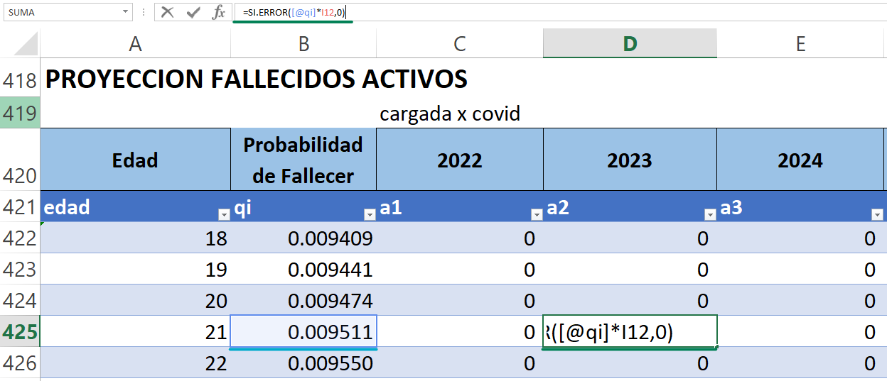
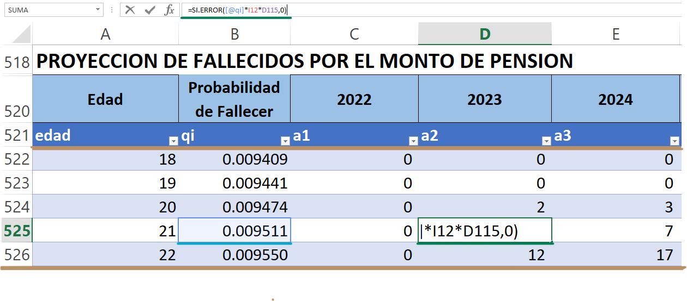

10 Inválidos
10.1 Invalidez Femenina [Inválidos F]
En esta tabla se encuentra información detallada sobre la cantidad de inválidos femeninos que se espera a lo largo de los años proyectados, información sobre los montos por invalidez, un resumen de todos estos datos estimados, y otras proyecciones que son relevantes para el análisis, las cuales describimos a continuación:
10.1.1 Proyección de las personas
A esta tabla en general se le ha llamado “Tinv_F” aquí se determinan la cantidad de afiliados en estado de invalidez a lo largo de los años proyectados, para determinar estos datos se hacen uso de una serie de parámetros que detallaremos a continuación:
\([qi]\) y \([ia\_dm]\) estas son las probabilidades de fallecer e invalidarse respectivamente. Aquí se hace uso de las Probabilidad de que un inválido fallezca a la edad x y la Probabilidad de decremento múltiple de que un activo se invalide a la edad x, las cuales se encuentran en la hoja [Tablas] en la matriz “Tbiometrica”.
\([a1-a100]\) son las cantidades de personas proyectadas que se realizan en el estudio, para este análisis se hace uso de la siguiente formula:
Donde:
\({CanI}_{j,x}\) = cantidad de afiliados en estado de invalidez de edad x en el año j.
\({Can}_{j-1,x-1}\) = cantidad de afiliados activos de edad x-1 en el año anterior.
\({CanI}_{j-1,x-1}\) = cantidad de afiliados inválidos de edad x-1 en el año anterior.
\({ia\_dm}_{x-1}\) = probabilidad de decremento múltiple de que un activo se invalide a la edad x-1.
\({qi}_{x-1}\) = probabilidad de que un inválido fallezca a la edad x-1.
Lo antes descrito es una igualdad a la fórmula 6.3.1 y 6.3.2 Cantidad de afiliados en estado de invalidez por edad y Cantidad de afiliados en estado de invalidez que fallecen respectivamente y que se encuentra en (Nota Técnica de Proyección de Flujos del Régimen del Seguro de Previsión Social, a diciembre 2020):

10.1.2 Tabla Resumen
En esta sección se encuentra un resumen de los datos proyectados para este estado como ser el total de inválidos por años, el porcentaje de crecimiento que se estima a lo largo de los años entre otras, a esta tabla se le ha llamado “Tresum_IF”. a continuación se describen a detalle cada una de estas:
- \([Total]\) Es la suma de todos los afiliados en estado de invalidez proyectados por año.
Donde:
\(C{anI}_{x,j}\) = cantidad de afiliados en estado de invalidez de edad x en el año j.
- \([Tasa\ de\ crecimiento]\) representa la tasa de crecimiento poblacional proyectada relacionada con el año anterior y el presente, para ello se hace uso de la siguiente formula
- \([Fallecidos]\) representa la suma total de la cantidad proyectada de fallecidos en estado de invalidez llamada “Tfall_IF” y ubicada en la misma tabla. Para ello hacemos uso de lo siguiente

10.1.3 Proyección de Pensiones
Esta tabla llamada “Tpeninv_F” contiene la proyección del monto por pensiones que se le otorga a un inválido. Para ello se hace uso de la siguiente formula, la cual establece una igualdad con la fórmula 6.3.3 Pensión por invalidez que se encuentra en (Nota Técnica de Proyección de Flujos del Régimen del Seguro de Previsión Social, a diciembre 2020)
\[\begin{align} Pen\_vI_{x,j} = \nonumber \\ & Pen\_vI_{x-1,j-1} \times \left (1+trevpen_j \right ) \times ia\_dm_{x-1}\times \left(1-qi_{x-1}\right) \nonumber \\ & \underline{\hspace{4 em}+Pen\_v_{x+5,j}\times Can_{x-1,j-1}\times ia\_dm_{x-1} \hspace{4 em}}\nonumber \\ &\hspace{1 em} CanI_{x-1,j-1}\times\left(1-qi_{x-1}\right)+Can_{x-1,j-1}\times ia\_dm_{x-1} \end{align}\]Donde:
\({Pen\_vI}_{x,j}\) = monto de pensión al fallecimiento de un inválido de edad x en el año j.
\({Pen\_vI}_{x-1,j-1}\) = monto de pensión al fallecimiento de un inválido de edad x-1 en el año anterior.
\({Pen\_v}_{x+5,j}\) = monto de pensión al fallecimiento de un activo de edad x en el año j.En este caso como se trata de la tabla de viudos es necesario igualar esa cantidad de edades, para ello hacemos uso del factor x+5.
\({trev\_{pen}}_j\) = tasa de revalorización de pensiones por año j proyectado.
\({CanI}_{x-1,j-1}\) = cantidad de afiliados inválidos de edad x-1 en el año anterior.
\({Can}_{j-1,x-1}\) = cantidad de afiliados activos de edad x-1 en el año anterior.
\({ia\_dm}_{x-1}\) = probabilidad de decremento múltiple de que un activo se invalide a la edad x-1.
\({qi}_{x-1}\) = probabilidad de que un inválido fallezca a la edad x-1.
Nota: Para el caso de análisis comparativo de viudez, para tener edades comparativas entre estas en caso femenino hay que tener x-5 años y para el caso masculino serian x+5 años.

10.1.4 Resumen de Proyección de datos
En esta tabla se realiza un resumen de las contribuciones y ayudas que reciben los afiliados inválidos de género femenino. Para ello vemos a detalle cada uno de los parámetros involucrados en dicha tabla.
- \([Pensión\ promedio]\) este parámetro contiene el promedio de las pensiones para inválidos, para dicho cálculo se hace uso de la fórmula 6.3.4 Pensión promedio para inválidos que se encuentra en (Nota Técnica de Proyección de Flujos del Régimen del Seguro de Previsión Social, a diciembre 2020)
Donde:
\({CanI}_{x,j}\) = cantidad de afiliados inválidos de edad de x en el año j.
\({Pen\_vI}_{j,x}\) = monto de pensión al fallecimiento de un inválido de edad x en el año j.
- \([Beneficio\ pensiones]\) este parámetro contiene el total de beneficio por pensiones para invalidez, fórmula similar a la fórmula 6.3.5 Pago total de pensiones por invalidez al año que se encuentra en (Nota Técnica de Proyección de Flujos del Régimen del Seguro de Previsión Social, a diciembre 2020)
Donde:
\({num\_pension}_j\) = número de pensiones en el año j.
- \([Aporte\ de\ salud]\) muestra el total de aportes a la salud proyectada por año y para ello se hace uso de la siguiente formula
- \([Ayuda\ Fúnebre]\) este parámetro representa la cantidad que se les dará a los familiares de los derecho-habientes jubilados, pensionados o fallecidos para gastos fúnebres, aquí se realiza un cálculo total por año proyectado, para ello se aplica la siguiente formula
Donde:
\(AFunbr{eI}_j\) = ¿ayuda que se otorga en el año j.
\(AFunbr{eI}_{j-1}\) = ayuda que se otorga en el año anterior.
\(tcrece\_afunebre\) = tasa de incremento del salario de referencia para otorgar beneficio de ayuda por sepelio.
- \([Tot.\ Ben.\ A.\ F.]\) Total de beneficios por ayuda fúnebre, este parámetro representa la cantidad total de beneficios que se conceden por ayuda fúnebre por toda la cantidad de fallecidos para el año proyectado

10.1.5 Proyección de viudos
A esta tabla se le llama “Tnviudez_IFM”, aquí se determina el monto total para las pensiones por viudeces a la muerte de un invalido femenino, en este caso se realiza una adaptación comparativa en las edades, recordando que se considera que la edad de jubilación del hombre es 5 años más, es por eso que se establece la edad x+5 es esta tabla. Para estimar la proyección de viudos se toma en cuenta la probabilidad de fallecer para una inválida y la probabilidad de estar casada,
\[\begin{equation} Can{V\_I}_{x,j}={qi}_{x-1}\times pcas_{x-1}\times{CanI}_{j-1,x-6} \end{equation}\]Donde:
\(Can{V\_I}_{x,j}\) = cantidad de viudos al fallecimiento de un inválido de edad x en el año j.
\({qi}_{x-1}\) = probabilidad de fallecer de una invalida de edad x-1.
\(pcas\_{x-1}\) = probabilidad de que un afiliado este casado a la edad x-1.
\({CanI}_{x-1-5,j-1}\) = cantidad de afiliados inválidos proyectados para el año anterior a la edad x-6.

10.1.6 Proyección del producto de monto pensión por número de pensiones nuevas de viudez, para calcular pensiones promedio de invalidez.
A esta tabla se le ha llamado “Tnew_penxnum_IFM”, y contiene el monto total de las pensiones que se otorgan por el fallecimiento de un invalido de edad x en el año j, estos parámetros son el resultado de la multiplicación del monto de pensión para edad x-5 (se parte de la edad del esposo) y por año proyectado j ubicados en la tabla “Tpeninv_F” y el número de viudos proyectados \(CanI_{x,j}\) por edad x en el año j ubicados en la tabla “Tnviudez_IFM”.
\[\begin{equation} {TPen\_vI}_{x,j}={Pen\_vI}_{x,j}\times{CanV\_I}_{x,j} \end{equation}\]Donde:
\({TPen\_vI}_{x,j}\) = monto Total de pensión al fallecimiento de un inválido de edad x en el año j.
\({Pen\_vI}_{x,j}\) = monto de pensión al fallecimiento de un inválido de edad x en el año j.
\(Can{V\_I}_{x,j}\) = cantidad de viudos al fallecimiento de un inválido de edad x en el año j.

10.1.7 Proyección Fallecidos Activos
A esta tabla se le ha llamado “Tfall_IF”, estos parámetros se determinan haciendo el producto de la probabilidad de fallecer para un invalido y la cantidad de afiliados en estado de invalidez por edad y por año proyectado ubicados en la tabla “Tinv_F”. Para ello se hace uso de la siguiente formula, la cual establece una igualdad con la fórmula 6.3.2 Cantidad de afiliados en estado de invalidez que fallecen (Nota Técnica de Proyección de Flujos del Régimen del Seguro de Previsión Social, a diciembre 2020)
\[\begin{equation} MueI_{x,j}=CanI_{x-1,j-1}\times{qi}_{x-1} \end{equation}\]Donde:
\(MueI_{x,j}\) = cantidad de inválidos que fallecen a la edad x en el año j.
\(CanI_{x-1,j-1}\) = cantidad de afiliados inválidos de edad x-1 en el año anterior.
\({qi}_{x-1}\) = probabilidad de que un inválido fallezca a la edad x-1.

10.1.8 Proyección De Fallecidos Por El Monto De Pensión
A esta tabla se le ha llamado “Tpenfall_IF” Este parámetro determina la cantidad de pensión proyectada para un invalido que fallece, se obtiene multiplicando la probabilidad de fallecer para un invalido por el monto calculado de pensiones al fallecimiento de un invalido ubicados en la tabla “Tpeninv_F” y la cantidad de activos proyectados para el año anterior ubicado en la tabla “Tinv_F”.
\[\begin{equation} {TMueI}_{x,j}={qi}_{x-1}\times{Pen\_vI}_{x,j}\times{CanI}_{x-1+d,j-1} \end{equation}\]Donde:
\({TMueI}_{j,x}\) = cantidad total de pensiones por fallecimiento de inválido de edad x en el año j.
\({qi}_{x-1}\) = probabilidad de que un inválido fallezca a la edad x-1.
\(Ca{nI}_{j-1,x-1+d}\) = cantidad de afiliados inválidos proyectada de edad de x-1+d años para el año anterior, d = 0 en caso femenino y d = 5 en caso masculino.
\({Pen\_vI}_{x,j}\) = monto de pensión al fallecimiento de un inválido de edad x en el año j.

NOTA: Todos los parámetros y tablas antes descritas siguen el mismo patrón y proceso para el caso masculino, habiendo ligeros cambios en los nombres siendo este cambio por la inicial del género (M).